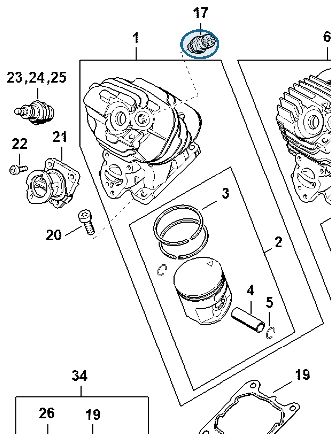

Decompression valve
1141 020 9430
MS 261 — cylinder
Decompression valve in the cylinder.
Item 17 Qty listed: 1

MS 261 C-M spare-parts list, 10/02/2023. Drawing p. 8; parts table p. 9.
1141 020 9430
Decompression valve in the cylinder.
Item 17 Qty listed: 1

MS 261 C-M spare-parts list, 10/02/2023. Drawing p. 8; parts table p. 9.